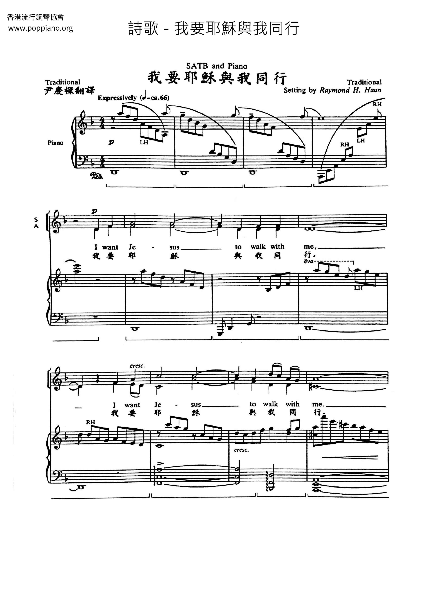

0140 I Want Jesus to Walk with Me [spiritual] 耶穌與我同在 SOJOURNER
| 簡介
I Want
Jesus to Walk with Me |
|
The two equal phrases in each line suggest that this African American
spiritual shares some characteristics of work or field songs that were
used to coordinate the efforts of slaves involved in tasks (road
clearing, ditch digging, etc.) that needed combined rhythmic strokes.
|
| |
頌主新詩 20
惟願耶穌與我同行 |
|
1 I want Jesus to walk with me.
I want Jesus to walk with me.
All along my pilgrim journey,
Lord, I want Jesus to walk with me.
2 In my trials, Lord, walk with me.
In my trials, Lord, walk with me.
When my heart is almost breaking,
Lord, I want Jesus to walk with me.
3 When I’m in trouble, Lord, walk with me.
When I’m in trouble, Lord, walk with me.
When my head is bowed in sorrow,
Lord, I want Jesus to walk with me.
Source: Voices Together #306
|
1
惟願耶穌 與我同行
惟願耶穌 與我同行
在這人生 漫長旅途
懇求主耶穌 與我同行
2
經歷試煉 與我同行
經歷試煉 與我同行
心靈傷痛 幾乎破碎
懇求主耶穌 與我同行
3
遭遇苦難 與我同行
遭遇苦難 與我同行
滿懷憂傷 垂頭喪氣
懇求主耶穌 與我同行我期望耶穌與我同在，
當我遇到麻煩時，主！請與我同在。
主！幫助我
在我的審判中，請與我同在。
當我的心將破碎時，我期待主。
|
|

https://www.poppiano.org/sheet/?id=29431
 |
| |
|
https://hymnary.org/text/i_want_jesus_to_walk_with_me
Though this spiritual focuses on a plea for Jesus to walk alongside us, there is
an element of assurance that His answer is “yes.” As the psalmist writes, “Even
though I walk through the valley of the shadow of death, I will fear no evil,
for you are with me” (Psalm 23:4, ESV). As this song is sung, think about what
it means to constantly have the presence of God, even when no human
companionship is available.
Text:
This text is an anonymous spiritual, most likely of the African-American
tradition. One author categorizes the song as a “communal lament” (Paul
Westermeyer, Hymnal Companion to Evangelical Lutheran Worship, p.
115-116). Another writes, “This text is categorized as a 'sorrow song,' meant
for individual rather than group singing” (Robert L. Anderson, The New
Century Hymnal Companion, p. 456). What both concur on is that this is
not a happy song. The three stanzas in common use are “I want Jesus to
walk with me,” “In my trials,” and “When I'm in trouble” (or sometimes “In my
sorrows”). All of them focus on a plea for the companionship of Jesus throughout
life, using the metaphor of a journey on foot.
Tune:
This spiritual's tune is also anonymous. It is named after Sojourner Truth, the
freed slave woman who publicly spoke for freedom and equality for all. This tune
is not hard to sing, though the changes between major thirds and minor thirds
may present a slight difficulty. The opening motif is repeated at the beginning
of the second and third phrases, and the fourth phrase repeats the ending motif
of the third phrase. Sing at a moderately slow tempo.
When/Why/How:
This hymn is often associated with Lent, but could be sung throughout the year.
It would work well paired with another spiritual or alone. An a capella setting
of “I
Want Jesus to Walk with Me,” with plenty of room for an energetic
interpretation, is for choir and a medium range soloist, and is suitable for
high school or adult choirs. “Walk
with Me” is a blues or gospel style choral setting, which has piano and
rhythm accompaniment and an original melody in the middle section. A simpler
choral version of “I
Want Jesus to Walk with Me” with piano accompaniment is more accessible to
smaller choirs. “Three
Lenten Hymn Settings for Organ, Set 3” contains a mournful organ setting of
this tune.
Tiffany Shomsky,
Hymnary.org
https://www.umcdiscipleship.org/resources/history-of-hymns-i-want-jesus-to-walk-with-me
By Victoria Schwarz and Rev. Wilson Pruitt
"I Want Jesus to Walk with Me"
African American Spiritual, Adapted by William Farley Smith
The United Methodist Hymnal, 521
I want Jesus to walk with me.
I want Jesus to walk with me.
All along my pilgrim journey,
Lord, I want Jesus to walk with me.
(Public Domain)
A spiritual that is frequently programmed during Lent, healing services, and
contemplative services is “I Want Jesus to Walk with Me.” Traditionally
attributed to the African American spiritual tradition, there is no record of
this spiritual in early collections, which results in an undetermined first
publication date and has led to some divergent scholarship on its origin.
In the Companion to The United Methodist Hymnal, a reference is made to Don
Hustad’s Dictionary-Handbook to Hymns for the Living Church (1978), quoting, “I
Want Jesus to walk with me” is “probably one of the ‘white spirituals’ which
thrived for more than two hundred years in the rural Appalachian culture.” The
entry goes on to say that, “If Hustad’s assumption is correct . . . [it] may
have its roots in early nineteenth-century camp meetings that were attended and
led by Native Americans, African Americans, and Euro/Anglos” (Young, 423).
Carl P. Daw’s recent scholarship for Glory to God: A Companion claims a higher
probability for an African American origin by revealing the appearance of a
variant form of the spiritual in Dorothy Bolton and Harry Burleigh’s Old Songs
Hymnal: Words and Melodies from the State of Georgia (1929). The entry reads:
. . . among the spirituals collected by Dorothy Bolton and Harry Burleigh there
is a similar text, ‘I Want Jesus to Talk with Me.’ After that line is sung twice
comes ‘When I’m on my lonesome journey,’ then the first line is repeated (Bolton
and Burleigh 1929, no. 84).
In that spiritual, “talk with me” remains invariable in the first, second,
and fourth lines, as does the third line just quoted. Some of the varying
beginnings are “When friends forsake me,” “When I am grieving,” and “When I am
dying,” with the clear implication that additional conditions could be
improvised, as lines are in many spirituals (Daw, 737).
Certainly, the overwhelming majority of hymnals and other sources list this
spiritual as being from the African American experience, and there is scattered
evidence that it was part of the early repertoire of the Fisk Jubilee Singers
for their performances during the late nineteenth century – another indicator of
African American origin. Calvin Earl (b. 1952), a modern preserver of African
American spirituals who successfully lobbied before the United States Congress
to recognize the African American spiritual as a National Treasure in 2007,
relays the story of an early tour of the Fisk Jubilee Singers where the singing
of “I Want Jesus to Walk with Me” saved them from a mob (YouTube link below).
Whether this story is legend or true, a quick Google search indicates instances
of this spiritual being performed by the Singers at various venues.
It is not unusual for a spiritual to have an unknown source; rather, this is the
norm for this genre of music. In her book In Their Own Words, Eileen Guenther
writes,
Spirituals are folk songs, the spontaneous utterances of those who originally
sang them. They are the fruit of the creative capacity of an entire people
rather than of individuals. They give voice to the joys, sorrows, and
aspirations of that people and, in so doing, they reveal the influences of the
environment from which they sprang (Guenther, 10).
James Cone, African American theologian and prolific author, writes of the
nature of spirituals:
The spirituals are historical songs which speak about the rupture of black
lives; they tell us about a people in the land of bondage, and what they did to
hold themselves together and to fight back. We are told that the people of
Israel could not sing the Lord’s song in a strange land. But, for blacks, their
being depended upon a song. Through songs they built new structures for
existence in an alien land. The spirituals enabled blacks to retain a measure of
African identity while living in the midst of American slavery, providing both
the substance and the rhythm to cope with human servitude . . . The spiritual,
then, is the spirit of the people struggling to be free; it is their religion,
their source of strength in a time of trouble. And if one does not know what
trouble is, then the spiritual cannot be understood (Cone, 30).
“I Want Jesus to Walk with Me” is simultaneously several different things: it is
a song of lament, a song of personal invitation, and a statement of assurance
that Jesus walks alongside those who suffer. Guenther writes, “The slaves’
association with Jesus was of such a personal nature they believed Jesus
accompanied them daily on their earthly journey and helped them endure its pains
and sorrows” (Guenther, 102). This is expanded on by Gwendolin Warren, an
African American author, who, while reflecting on this spiritual, wrote:
African-American Christians found great comfort and encouragement in believing
that this life was only a journey¾a “passing through”¾to a better place . . .
As they passed through the bitter trials of this earth, their desire was
that they not walk alone, but that Jesus walk with them. Knowing that Jesus, who
had already passed through the fiery trials and come out triumphant on the other
side, was walking beside them gave them courage to go on (Warren, 60).
This spiritual is part of a group of folk songs known as “journey songs.”
A companion spiritual is “Jesus walked this lonesome valley” (The Faith We Sing,
2112); similarly, “Poor Wayfaring Stranger,” usually designated as an
Appalachian ballad, speaks of the transient nature of our lives. Walking with
God is a trope used throughout the Bible to illustrate intimacy with God. Enoch
walked with God in Genesis 5; in Deuteronomy, the people of Israel are exhorted
to “observe the commands of God by walking in his ways.” In Micah 6:8, the great
verse of justice ends with walking humbly with God. In the Gospels, Jesus walks
a lot – most places, in fact. When Jesus calls people to follow him, they start
walking with him. In Romans, Ephesians, Hebrews, and 1 John, walking with Jesus
is used as mark of intimacy and faithfulness.
In The United Methodist Hymnal (521), the first stanza repeats the line
“I want Jesus to walk with me” twice. The desire is important, as well as the
reality that it is Jesus who walks with us, not us with him. Stanzas two and
three are filled with occasions of need and a consistent call for God’s presence
in such need. “In my trials, walk with me . . . when I’m troubled, walk with
me.” Jesus doesn’t need me; I need a savior— not just for those hard times, but
especially for those hard times.
In seeking Jesus to walk with me, the hymn also affirms the peripatetic and
pilgrim nature of this life. The troubles of this world do not define us, but we
still need Jesus. This is not our final home, but we still need Jesus.
Finally, in singing this hymn congregationally, the theological power is found
in the fact that not everyone will be facing a trial, but some will. And, as the
body of Christ, we call on God together. The “I” is not me, but us; we are one
in Christ Jesus, and we all call God near.
Sources and Further Reading
Dorothy Bolton and H. T. Burleigh, Old Songs Hymnal. Words and Melodies from the
State of Georgia (New York: The Century Co., 1929).
James H. Cone, The Spirituals and the Blues (Maryknoll: Orbis Books, 1991).
Carl P. Daw Jr., Glory to God: A Companion (Louisville: Westminster John Knox
Press, 2016).
Calvin Earl, “The Fisk Jubilee Singers Story.” YouTube video. Posted January 25,
2014. https://www.youtube.com/watch?v=Shwq6npD5Bk
Eileen Guenther, In Their Own Words: Slave Life and the Power of Spirituals (St.
Louis: MorningStar Music Publishers, 2016).
Gwendolin Sims Warren, Ev’ry Time I Feel the Spirit: 101 Best-Loved Psalms,
Gospel Hymns, and Spiritual Songs of the African-American Church (New York:
Henry Holt and Company, 1997)
Carlton R. Young, Companion to the United Methodist Hymnal (Nashville: Abingdon
Press, 1993).
Victoria Schwarz is the recording secretary of The Fellowship of United
Methodists in Music and Worship Arts; Director of Music at Berkeley United
Methodist Church in Austin, TX; and a Master of Arts in Ministry Practice
student at Austin Presbyterian Theological Seminary.
Rev. Wilson Pruitt is the pastor of Berkeley United Methodist Church in Austin,
TX. A graduate of the University of Texas at Austin and Duke Divinity School,
Rev. Pruitt is passionate about the theological and formational aspects of hymns
at the intersection of faith and practice in the liturgy of the church.
https://howard-the-evangelist.blogspot.com/2019/08/life-as-sojourner.html
客旅人生這主題令我想起人生不外生老病死，喜怒哀樂以至是悲歡離合等••這樣說來，人生可說是不外如是，又有人說人生如夢，這令我想起莊周夢蝶的故事，是的，我們如何可以決定或考究我們是「人」呢還是「蝶」呢？我相信要花大家不少的心思才能恍然大悟了。
[來11:8-16]可以用「盼望有根基之城」來作點題，當中我們看到
亞伯拉罕因著信，蒙召的時候就遵命出去，往將來要得為業的地方去；出去的時候，還不知往哪裡去(8節)。
他因著信，就在所應許之地作客，與那同蒙一個應許的以撒、雅各一樣(9節)。
因為他等候那座有根基的城，就是神所經營、所建造的(10節)。
這些人都是存著信心死的，並沒有得著所應許的，卻從遠處望見，且歡喜迎接，又承認自己在世上是客旅，是寄居的(13節)。
因為他們卻羨慕一個更美的家鄉，就是在天上的。所以神被稱為他們的神，並不以為恥，因為他已經給他們預備了一座城(16節)。
經文中8節的信(faith)，[來11:1]說信就是所望之事的實底、是未見之事的確據。
簡言之，信就是堅定的相信和有根有基的相信。而9節提到的同蒙一個應許是指[創12:1-3]中
神給亞伯拉罕的應許，即叫他成為大國，叫他的名為大；他也要叫別人得福─地上的萬族都要因你得福。但條件是要 他離開原居地，往
神所指示的地去。13節指這些人是世上是客旅(strangers[YLT])意指陌生人，外地人，客人包括貴客、和戲子等等，而寄居(sojourners[YLT])則指奇居的外人，包括朝聖者。13節提到這些人是存著信心死，並未得著所應許的，卻從遠處望見。當中的遠處可指時間或空間，而望見可指信心之見(如孩子相信父母考試後會給他獎勵)或屬靈之預見(參瀕死經歷)(參林後12:2-4)。
順帶提一下，以色列人口於2019年約900萬，但猶太人則約674萬(3/4)，正式﹝不計有爭拗的﹞的領土約22萬平方公里，
在世界上所有國家中排列第146位，實難稱為大國！所以神的應許應未全然實現。然而神的應許是不會落空的，怎可以這樣說呢？因為人類歷史尚未完結，誰能否定以色列絕不會成為大國呢？此外，神的應許的全然實現往往都是屬於永恆屬靈的事情，例如神的拯救終極成就乃是主耶穌基督的救恩，神賜人生命的終極實現乃是永生，神的公義全然彰顯大概要等到大審判等等…，所以神應許亞伯拉罕的應許之全然實現離不開主基督的國度和信徒被收納為神的兒女及子民。因為耶穌作為亞伯拉罕的後裔及人類的救主，祂死而復活得了天上地下的權柄，是合法合理亞伯拉罕福氣的承繼人，神在他身上也成全了對亞伯拉罕的約。
今日經文對我們有何提示呢？我想應有以下幾點：
1. 信徒在世上是客旅，是寄居的，
2. 信徒的終極家鄉是天家，
3. 我們的真正身份是天國的子民！我們的生命核心是個靈。
4. 信徒應羨慕的是天上無憂之城，永樂的國，一個更美的家鄉，這天城有上主作他們的 神，他們則是 神家�堛漱H﹝即 神的兒女或子民﹞。
若我們認同自的人生是個客旅，那就不妨作出以下的考慮
Ø 先要搞清自己作客的身份：例如遊客、學生、從商，工作或朝聖等;
Ø 我的生活跟我的身份是否配合(match &
correspond)？若是遊客便以玩樂、是商人則以營商、是學生則以學習為主等等，鮮有能一身兼數職的，縱有，也分主次。作為信徒，我理應活出一個聖潔及敬虔的生活，好見證天父的聖潔、大愛和大能等！
Ø
人基本上都追求快樂：甚麼事會令我們快樂呢？可以是肉身上的，或者是精神(靈性)上的，事實上，人可以自私自利(以肉身享樂為主)或愛人如己(如犧牲小我，完成大我的典範)？這2樣傾向我都有些，問題是我能否超越眼前的成敗得失，以至能相信永恆真實的快樂只有天家才有？我又發覺我的價值觀是人生的動機，例如：我一生追求甚麼？是安樂的生活？是幹一翻事業？或是成全大我呢？
以上的分析主要是從屬世層入手，我們理當作些屬靈的考慮，即：
Ø 信徒理應以天上的事為念
Ø 天上有何事？
後者令我想起天父和主耶穌，天使，聖徒…，聖城，樂園、生命河，生命冊，永生、以至無限的喜樂、神奧秘的超越性 (林前2:9)，即
神為愛他的人所預備的是：眼睛未曾見過！耳朵未曾聽過！人心未曾想過！即超越人的認知及思想，時間和空間等！我們仍要問：「這些事與我何干？」
若無關則只是旁觀者，若有關則是持份者，那我們便是 神家�堛漱H，若是這樣，我們人生便有了方向，亦為我們的生命賦予一個價值，就是我們活著是為了榮
神益人，好叫我們在離世之後可以歸回創造我們的天父！這使我想到我與
神關係的基礎就是信心﹝來11:6﹞，因我憑信心接受主，亦憑信心生活，我們行事為人若沒有對神的信心，便不是信徒，更不可能是門徒。所以人-神關係不可缺少信心，若我不信主耶穌，那來有永恆的盼望等等呢？
說到這�堙A讓我們看看以色列先祖的見證，亞伯拉罕蒙召離開吾珥，出去的時候，還不知往哪裡去！所以是信心之父；以撒被獻(有分析說他當時應是個少年人，可能接近20歲了)時的順服，雅各與神摔跤等都給我們看到以色列的先祖的人生是滿有神的恩典和預備。嚴格地說，他們過的都是漂泊的遊牧生活，遂水草而棲，是典型的過客，甚至可說是客死異鄉！
親愛的朋友，你有沒有想過可成為一大國，或者創一翻大事業、以至做一件大事？若有，你應該是個很有抱負和很特別的人，若無，你大概是個普通人，不外追求安居樂業，又或者是4仔主義﹝屋仔，車仔，老婆(公)仔，仔仔﹞，甚至是渴望名成利就、大富大貴。無論如何，讓我們看看以下見證。
小婦人：艾偉德(Gladys
Aylward)教士
艾偉德(Gladys
Aylward，1902-1970)出身寒微，卻對主滿腔熱血，竟花費了所有的積蓄購買了去中國的旅票，1930年她隻身一人從英國出發，懷著僅剩的 2 英鎊 9
便士，乘船和火車穿越歐亞大陸，她憑藉著一股毅力，克服了身無分文、飢寒交迫、語言不通、幾乎被拘留遣返等難關去到山西，並找到了年老的傳教士，與她一起工作。艾教士不僅住在華人中，還服侍華人，包括最低下的華人，後來更入了中國籍，當時的中國是被列強欺凌的弱國，她曾在山西開設八福客棧，後來又創立了篤志傳道會，讓福音使命得以承傳！她的事跡後來被拍成六福客棧電影，而扮演艾偉德的女星英格烈褒曼(Ingrid
Bergman) 因拍該片最終在1970年往訪艾教士後信了主耶穌！
喬宏弟兄
1917年出生於上海，是家中第五代的基督徒。於抗戰時期在重慶讀書，戰後回上海在一家美国学校讀書，1949年去了台湾開始拍戲。跟著來了香港，他曾經歷過翻船、撞車、撞飛機、三度心臟病發，皆死�堸k生，表現堅強，卻因妻子得了肺癌而大哭一場，真是鐵漢柔情。他成立《藝人之家》，向圈中人傳福音，這跟他在韓戰時曾當美軍翻譯，親眼目睹戰爭的殘酷，使他明白到愛和救恩對人類有重大意義有關。於1978年喬宏與一位學員駕駛一架小型飛機，不幸在香港石崗機場附近山腰失事，神拯救了他及這位名為鄭偉昌的學員，他們只受了輕傷，後來鄭生決志信主，更成為牧師，並到處傳福音及為
主作見證。喬宏一生敢作敢為，正直不阿，在娱樂圈打滾四十多年，是出污泥而不染，並努力傳揚福音，相信他現在天家�堨痔w滿有說不出的喜樂和福氣！
看過以上見證後，讓我們自我檢視一下：
Ø 我的人生在追求甚麼？是否不外乎名利得失？又或是愛情事業等等？你作決定時有否認真考慮過主耶穌的榜樣？有沒有思想相關的聖經的教導嗎(例如一個人不能事奉兩個主)？
Ø 我願過一個以信心為本的客旅人生嗎？我們都明白信徒亦有軟弱和掙扎，例如人內心若沒有
神的愛，就很易被罪咎、忿恨恐懼，慾望等駕馭；現實中不難見到人為財死，或為名為利而明爭暗鬥的例子！又例如若一件事情是根源於互相懷疑、對一些事物無知的恐懼，並因而造成了人際間的嚴重對立、分裂和衝突！這事情當然不合
神心意！相反，若一件事情若是基於互信，盼望和愛，它離 神的心意應不遠了！作為客旅，你會選擇跟從和做那一件事情呢？
Ø 我對天家有懇切的盼望嗎？當我們面對困難和考驗，我們的盼望能給與我們力量面對和勝過它們嗎？我們能否肯定當我們行完人生路程時，必能安返天家，與
主同在？保羅說得好，看得見的盼望不是盼望，因為真正的盼望是屬天的及不可見的。
你若願意，可以作出以下禱告：
「慈愛的天父，
你既然為我們預備了無比貴重的生命，我們又有許多的見證人，活出了如同雲彩的人生，求天父幫我們放下各樣重擔，脫去纏累我們的罪，存心忍耐，好行完我們人生的路程，並仰望為我們信心創始成終的
主耶穌。
主耶穌阿，請幫助我們明白你的榜樣和教導，免得我們被迷惑，好能順服祢的引領，認定我們今生只是客旅，又能深信聖經的應許，以及使徒保羅所提到那極大之盼望，就是在天家中，我們除了能成為祢的兒女，還有極豐富和超越的福樂，是眼睛未曾見過！耳朵未曾聽過！人心未曾想過的！
聖靈阿，求祢開我們的心眼，讓我們能看見屬 神的榮耀和喜樂，好讓我們能定睛天上更美的天城，無負今生，奉 耶穌基督聖名求，阿們。」
http://www.hymncompanions.org/Apr/03/stream.php
經過山谷有耶穌與我同行，或經平原主仍與我同行；
不論前途是幽暗或是光明，我無怨言若主與我同行。
試探來臨有耶穌與我同行，賜我力量使我完全得勝；
憂傷來臨主親自安慰同在，主大能手將我扶持安穩。
若遇風暴有耶穌與我同行，時常保護引我到平安地；
祂是策士又是我的安慰者，領我一生直到天家安息。
晨曦之時有耶穌與我同行，黃昏黑夜主仍與我同行；
不論生死祂總不把我丟棄，直到永遠耶穌與我同行。
（副歌）
耶穌與我同行，祂與我交談，祂與我同行；
或喜樂或憂傷，或今日或明日，我知主與我同行。
 (請點耳機收聽)
(請點耳機收聽)
但以理的三個朋友被扔入火窯時，尼布甲尼撒王見到有四個人在火中行走，膚髮無損，他說神差遣使者救護倚靠祂的僕人。
我們無論在荒漠幽谷行走，在風暴烈火中受試煉，都有耶穌同行。
本詩的詞曲都是李理納（Haldor Lillenas,1885 –1959，見四月十八日）所作。
另有一首詩歌「與主同行榮耀無比」（It Is Glory Just to Walk with
Him），也是李理納譜曲，歌詞是關馨珊（Avis B. Christiansen, 1895-1985, 見九月廿七日）所作。
其歌詞如下：
何等榮耀！因主血救贖，
我能與祂同行，每日喜樂在我魂湧溢；
無論何往，我知祂親近，
就歡喜蒙引領，讚美主！一路榮耀無比。
何等榮耀！雖有黑影，
我知道祂正同行，仍喜樂向祂依靠禱祈；
何等榮耀！與主同在，
當晴天萬里無雲，祂同行，一路榮耀無比。
在彼黃金岸與祂同行，
更是榮耀無比，不再遊蕩或與祂稍離；
何等榮耀！奇妙榮耀！
能與祂永在一起，享榮耀直到永永遠遠！
（副歌）與主同行真榮耀無比，與主同行真榮耀無比；
祂必引領我腳步，跨越山嶺經幽谷，
與主同行真榮耀無比。
(請點耳機收聽)
宣信 （A.B. Simpson）有一首詩歌『跟從主』（Step by
Step）勉勵我們每時每刻每一步都要與主同行。
跟從主
Step
by Step
與主同行是何等佳美，步步進，日日跟從；
一步一步跟從主腳蹤，與主同行始無終。
與主同行真安全無比，安然靠在主膀臂：
主領何往我必定跟從，無災害亦無傷悲。
一步一步跟從主耶穌，每時刻都跟從主；
雖無羽翼可飛上天庭，跟從主步步攀升。
懇求救主與我更親近，步步進，日日跟從；
一步一步跟從主腳蹤，跟從主由始至終。
（副歌）每一步，每一步，我要與主同行，
晨至暮，全程路，我要與主同行。
(請點耳機收聽)
中英文聖詩集參考
英文歌名 Jesus
Will Walk with Me
教會聖詩 428
青年聖歌II 25
讚美 320
英文歌名 It
Is Glory Just to Walk with Him
青年聖歌III 62
英文歌名 Step
by Step
生命聖詩 400